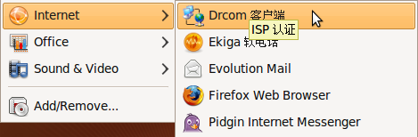
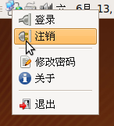
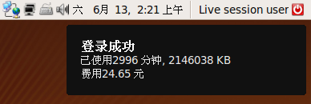
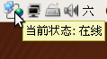
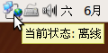
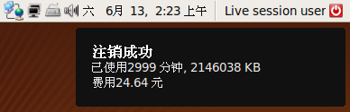

教程
针对drcom-client PUM v1.0
这里所使用的Linux发行版 -- Ubuntu 9.04 (Jaunty)
[安装 | 运行 | 登录 | 状态 | 注销 | 修改密码 | 卸载 | 错误信息处理]
安装 drcom-client
源码安装
- 下载最新的源码包
- 编译源码和安装
二进制包安装
- Ubuntu/Debian Package (.deb)
- Fedora Package (.rpm)
你可以到这里下载最新的源码包。
假定你下载的源码包的名称是drcom-pum-1.0.tar.gz
$ tar zxvf drcom-pum-1.0.tar.gz $ cd drcom-pum-1.0/ $ make & sudo make install
如果你使用 .deb 方式安装过 g-drcomclient，请先将 g-drcomclient 卸载，否则会导致错误的发生。
$ sudo dpkg -r drcomclient
现在你可以安装 drcom-pum 了。
$ sudo dpkg -i drcom-pum_1.0_all.deb
注: 你也可以双击该 deb 包的图标，这是图形化的安装方式。
$ sudo rpm -ivh drcom-pum_1.0_all.rpm
运行
如果你使用 GNOME 为默认桌面系统， 你可以在应用->互联网中找到 drcom-client 的启动项。
- 注意:
- 如果你准备调试 drcom-client 程序， 你可以在终端中执行 drcomclient 命令。
登录
在 drcom-client PUM 中， 由于采用100%的GUI配置方式，登录和注销变得非常容易。
以下是 drcom-client PUM 的登录窗口。
左击 "登录" 按钮.
注: 如果你所在的 Dr.COM 服务器地址不是文本框中显示的，请自行修改。

或者
在上方的工具条上，右击 系统托盘 ，然后左击 "登录"。

当成功登录时，drcom-client PUM将提示:

状态
用户在登录 drcom-client 之后，经常会记不请是否已经注销。所以我们为 drcom-client PUM 增加了状态信息提示的功能。
将 鼠标E 移动到系统托盘 上方， 它将显示:
当用户 在线 时

当用户 离线 时

注销
注销过程和登录过程相似。在登录窗口中，左击 "注销" 按钮，或者在下拉菜单中左击 "注销" 。
当你成功注销时， drcom-client PUM 将提示:

修改密码
如果你准备修改密码，请 右击 系统托盘 ，选择 修改密码。
然后，将弹出修改密码的窗口。

- 注意:
- 在线状态(已经登录)，不能修改密码。
卸载
卸载 drcom-client PUM 和安装过程类似。
源码卸载
二进制包卸载
- Ubuntu/Debian Package (.deb)
- Fedora Package (.rpm)
如果你仍然保留着安装时的源码包，下面的过程会简单些。如果没有的话，你需要重新在这里下载源码包。
在你下载之前，请确认下载的源码包版本是否和你的安装版本一致。
假定你保留的源码包名称是drcom_pum-1.0.tar.gz
$ tar zxvf drcom-pum-1.0.tar.gz $ cd drcom-pum-1.0/ $ sudo make uninstall
如果你之前安装过 drcom-1.4.x 命令行版本还没有卸载的话，
上面的卸载工作，可能会导致该命令行版本运行时出现以下错误:
FATAL: Could not open '/lib/modules/.../drcom.ko':No such file drcomd: Error loading drcom module
不过没有关系，如果你还想使用 drcom-1.4.x的话，按下面的步骤进行就可以了
$ cd drcom-pum-1.0/src/kmod $ make & sudo make install
$ sudo dpkg -r drcom-pum_1.0_all.deb
$ sudo rpm -e drcom-pum_1.0_all.rpm
错误信息处理
drcom-client PUM 能够自我处理非严重性的异常情况。